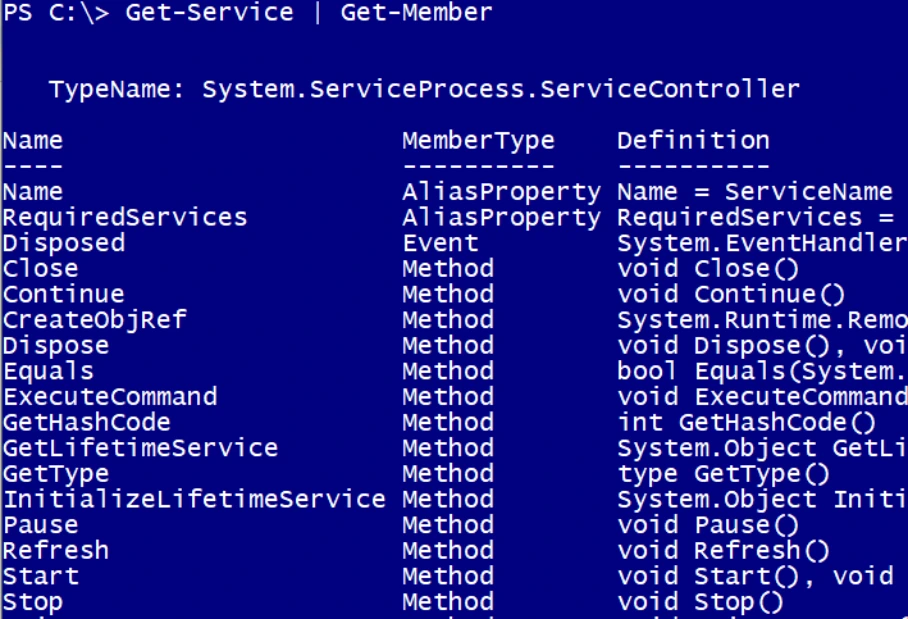
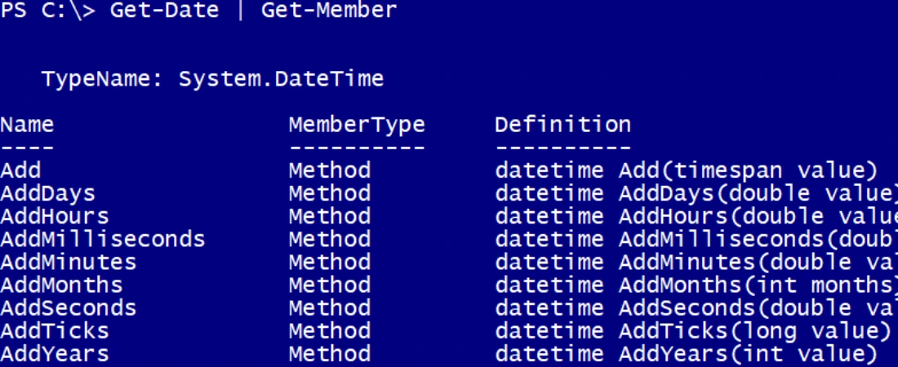
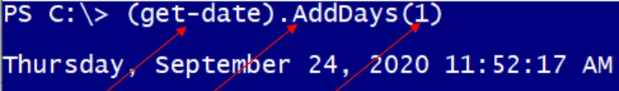
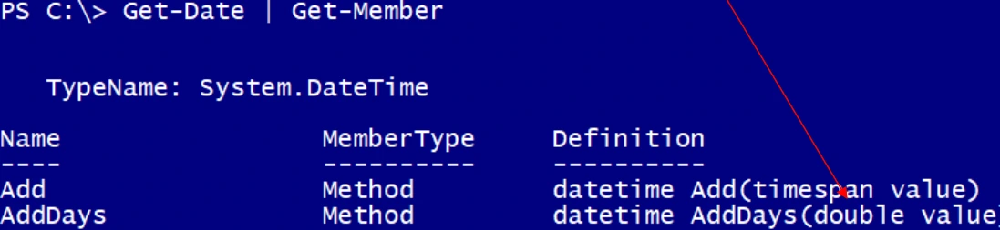

Transcription du support du Drive. Les formulations historiques et les exemples du document sont conservés. Les valeurs d’accès du laboratoire sont indiquées comme « fourni par le formateur ». Les adresses de messagerie personnelles utilisent example.com.
Démonstration 03 du module 2
L’objectif de cette démonstration est de vous présenter ce que sont les méthodes.
De la même façon qu’un objet contient des propriétés, les méthodes qu’il contient vont permettre d’effectuer des actions sur la totalité de l’objet, sur une propriété ou de faire des actions de conversion par exemple.
La méthode Start a une portée sur tout l’objet service.
L’utilisation d’une méthode se fait en ayant les informations à disposition telles que l’objet sur lequel on souhaite exécuter la méthode ou la propriété de l’objet sur laquelle on va exécuter cette méthode.
Get-Service | Get-Member
L’objet System.DateTime dispose de méthodes permettant de faire varier les valeurs obtenues parla commande Get-Date.
Pour ajouter un jour au résultat, on utilise la méthode Add-Days suivie du nombre de jours que l’on souhaite ajouter.
L’objet la méthode la valeur
L’objet est contenu entre parenthèses ; il est suivi d’un point puis de la méthode, ce qui indique que l’on utilise la méthode de cet objet.
La valeur fournie entre parenthèses de la méthode doit être d’un type utilisable par la méthode.
Get-Date | Get-Member
(Get-Date).AddDays(1)

